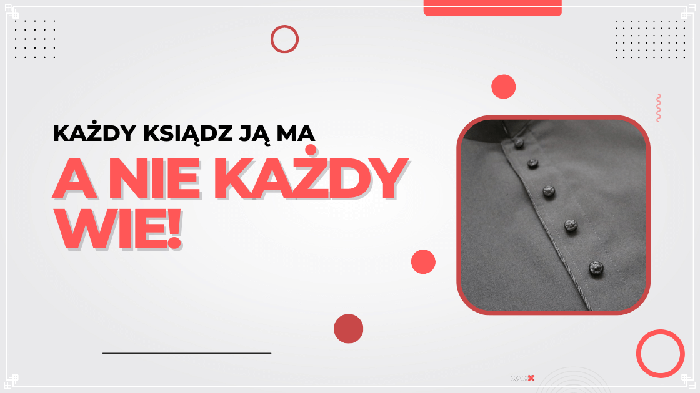
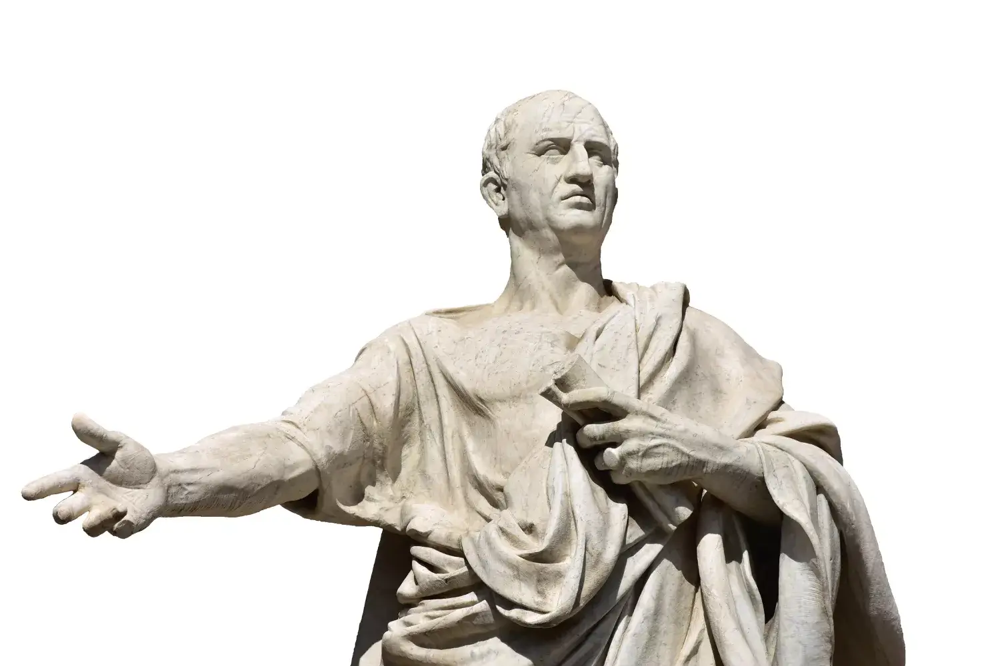

Sutanna nie powstała w XVI wieku

Strój duchowny tworzył się od początku istnienia chrześcijaństwa – nie jako konkretny krój szaty, lecz jako zamysł. Był nim każdy skromny ubiór! Bo duchowe dla starożytnych chrześcijan było to, co skromne.

Nie powstała z togi
Kapłani nie bywali senatorami rzymskimi. Z czasem toga odeszła w cień na rzecz dalmatyki i innych strojów wierzchnich znanych ze starożytności czy wczesnego średniowiecza.
Nawet bł. kard. Wyszyński wiedział, że...
"Sutanna nie jest ubiorem w szeregu innych strojów, ale jest wyznaniem wiary przed ludźmi, jest odważnym świadectwem danym Chrystusowi, jest przyznaniem się do Kościoła."
Przejdź do sklepu i zamów swój egzemplarz!
Dziś kupisz ją taniej niż jutro!
Pewnie zastanawiasz się: dlaczego książka nie jest wydana w żadnym wydawnictwie?
Z bardzo prostej przyczyny - aby książka była zawsze dostępna dla każdego. Ja, jako autor mogę o to zadbać, ponieważ wiem, że to ważny temat. Dlatego zostałem samowydawcą.
Wiele wydawnictw zaniedbuje publikacje i często oczekiwanie na nowy nakład przedłuża się powodu braku opłacalności. Autor zaś nie ma większej kontroli nad swoją książką. Same wydawnictwa dzisiaj nie są już wyznacznikiem jakości, a sama treść jest pełna błędów.
Chcę, aby moja publikacja odznaczała się jakością, choć nie oznacza to pełnej doskonałości. Zawsze znajdą się błędy. Ale jedno mogę zagwarantować - książka będzie zawsze dostępna!